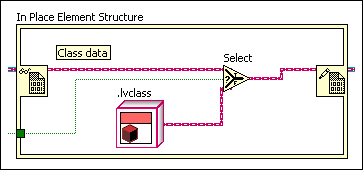
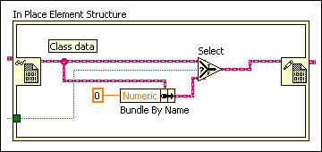

A Select function lies on the path between a pair of Data Value Reference Read / Write Element border nodes of a class reference. The class inputs to this function, the t and f inputs, must be some modification of the original class data. Either the class coming into one of the inputs of this function originates at a different source or the data passes through a function that does not guarantee run-time type preservation.
To correct this error, trace the data path of both class inputs to the Select function. At least one of the class inputs does not originate at the Data Value Reference Read Element border node. To correct this error, you also can ensure that all paths preserve the run-time type.
